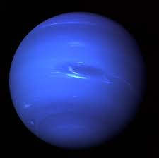
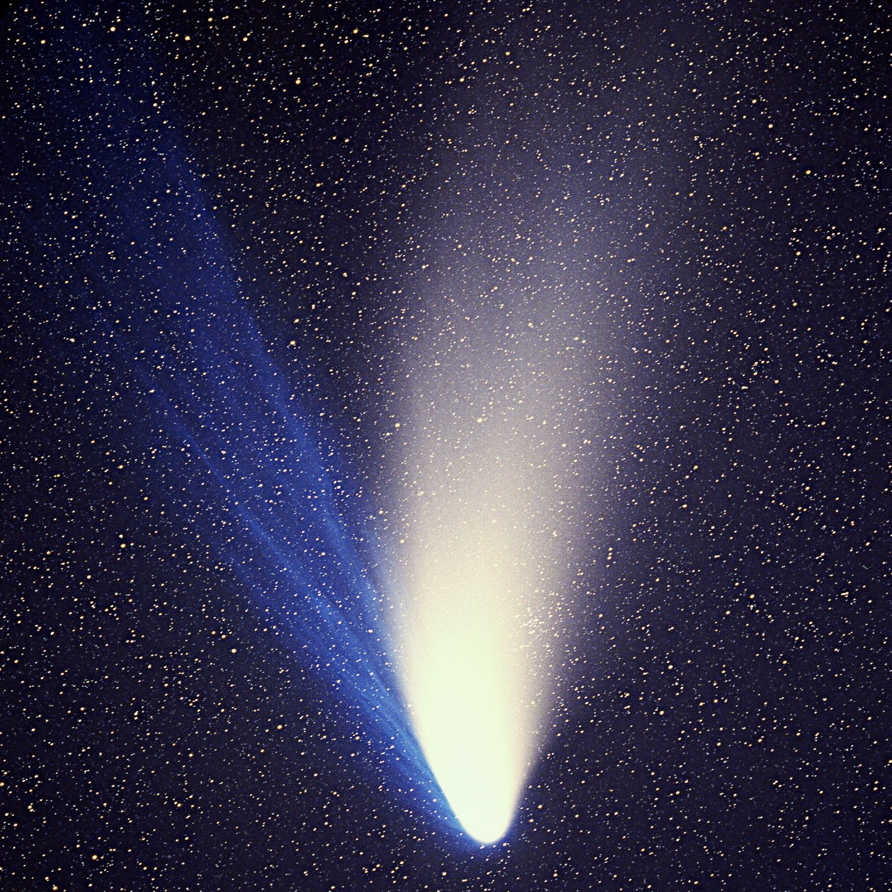

Galaksi Bimasakti adalah galaksi tempat tata surya kita, termasuk Matahari dan semua planet serta benda langit lainnya, berada. Galaksi ini adalah salah satu dari banyak galaksi di alam semesta.
Galaksi Bimasakti adalah salah satu galaksi paling besar yang kita kenal. Diameternya diperkirakan mencapai sekitar 100.000 tahun cahaya.
Galaksi Bimasakti terdiri dari miliaran bintang, sistem bintang ganda, planet, asteroid, nebula, debu antarbintang, dan banyak objek langit lainnya. Matahari kita adalah salah satu dari miliaran bintang yang ada di dalamnya.
Bintang-bintang di dalam Galaksi Bimasakti bergerak mengelilingi pusat galaksi dengan kecepatan yang cukup tinggi. Tata surya kita juga mengikuti gerakan ini.
Manusia telah mengirimkan wahana antariksa ke luar angkasa untuk mempelajari lebih lanjut tentang Galaksi Bimasakti. Salah satu misi yang terkenal adalah Voyager yang membawa pesan dan informasi tentang manusia ke luar angkasa.
Matahari
Matahari adalah bintang pusat dari tata surya kita dan merupakan salah satu benda langit yang paling penting dalam alam semesta kita.
Matahari sangat besar, dengan diameter sekitar 1,4 juta kilometer (lebih dari 100 kali diameter Bumi). Massanya juga sangat besar, sekitar 330.000 kali lebih masif dari Bumi.
Matahari adalah sumber energi utama dalam tata surya kita. Energi Matahari dihasilkan melalui reaksi fusi nuklir di intinya, di mana atom-atom hidrogen bergabung untuk membentuk helium. Proses ini melepaskan energi dalam bentuk panas dan cahaya yang kemudian menyebar ke seluruh tata surya.
Energi dari Matahari mendukung kehidupan di Bumi dan merupakan objek yang sangat dipelajari oleh ilmuwan dan peneliti untuk memahami lebih dalam tentang alam semesta kita.
Planet
Galaksi Bimasakti adalah rumah bagi banyak planet yang beragam, termasuk tata surya kita sendiri. Ada delapan planet yang mengorbit Matahari dalam tata surya kita. Dari yang terdekat dengan Matahari
Planet
Jarak dari Matahari
Radius
Masa
Merkurius
57.9 juta km
2,439.7 km
0.33 x Bumi
Venus
108.2 juta km
6,051.8 km
4.87 x Bumi
Bumi
149.6 juta km
6,371 km
1 x Bumi
Mars
227.9 juta km
3,389.5 km
0.11 x Bumi
Jupiter
778.3 juta km
139,822 km
317.83 x Bumi
Saturnus
1.4 miliar km
116,464 km
95.16 x Bumi
Uranus
2.9 miliar km
50,724 km
14.54 x Bumi
Neptunus
4.5 miliar km
49,244 km
17.15 x Bumi
Ayo kenali delapan planet utama yang berada di sistem tata surya kita! Pilih planet melalui fitur dropdown di bawah ini.
Planet 1: Merkurius
Merkurius adalah planet terdekat dengan Matahari dan juga planet terkecil di tata surya kita. Permukaannya terdiri dari banyak kawah dan memiliki perbedaan suhu ekstrem antara siang dan malam.
Planet 2: Venus
Venus adalah planet yang mirip dengan Bumi dalam ukuran dan komposisi, tetapi atmosfernya sangat tebal dan panas. Permukaannya dipenuhi oleh gunung berapi dan kawah besar.
Planet 3: Bumi
Bumi adalah rumah bagi kehidupan dan satu-satunya planet yang diketahui memiliki air dalam bentuk cair, atmosfer yang mendukung kehidupan, dan berbagai ekosistem.
Satelit Alami: Bumi memiliki satu satelit alami, yaitu Bulan.
Planet 4: Mars
Mars dikenal sebagai "Planet Merah" karena permukaannya berwarna merah. Planet ini memiliki lapisan tipis atmosfer dan beberapa bukti adanya air di masa lalu.
Satelit Alami: Mars memiliki dua satelit alami utama, yaitu Phobos dan Deimos.
Planet 5: Jupiter
Jupiter adalah planet terbesar di tata surya kita dan dikenal dengan cincin gasnya yang besar. Ini adalah planet raksasa dan memiliki banyak bulan.
Satelit Alami: Jupiter memiliki lebih dari 80 satelit alami, termasuk yang terbesar, yaitu Ganymede, Io, Europa, dan Callisto.
Planet 6: Saturnus
Saturnus adalah planet lain yang memiliki cincin besar yang sangat terkenal. Cincin Saturnus terdiri dari pecahan-pecahan es dan batu.
Satelit Alami: Saturnus memiliki lebih dari 80 satelit alami, termasuk Titan, Enceladus, dan Mimas.
Planet 7: Uranus
Uranus adalah planet yang memiliki sumbu rotasi yang miring, sehingga berputar di sisi yang berbeda-beda. Ini adalah planet gas raksasa.
Planet 8: Neptunus

Neptunus adalah planet yang jauh dan dingin, dan merupakan planet terakhir dalam tata surya kita. Ini juga adalah planet gas raksasa.
Satelit Alami: Neptunus memiliki lebih dari 10 satelit alami, termasuk Triton, yang merupakan satelit terbesar dan unik karena bergerak dalam arah yang berlawanan dengan rotasi planet.
Asteroid & Meteoroid
Ada banyak asteroid dan meteoroid yang mengorbit Matahari dan beberapa di antaranya dapat memasuki atmosfer planet dan menjadi meteor.
Komet

Komet adalah objek yang terdiri dari es, debu, dan gas yang mengorbit Matahari. Ketika mendekati Matahari, mereka dapat mengembangkan ekor terang.
Sabuk Asteroid
Terletak di antara orbit Mars dan Jupiter, ada sabuk asteroid yang berisi sejumlah besar asteroid kecil yang mengorbit Matahari.
Sabuk Kuiper
Terletak jauh di luar orbit Neptunus, ada sabuk Kuiper yang berisi objek-objek trans-Neptunus seperti Pluto dan Eris.
Kuis
Yuk, uji pemahamanmu!
Berapa jumlah planet dalam tata surya kita?
Planet manakah yang dikenal sebagai "Planet Merah" karena permukaannya berwarna merah?
Planet manakah yang memiliki cincin yang sangat terkenal?
Apa nama satelit alami terbesar yang mengorbit Bumi?
Planet manakah yang memiliki sumbu rotasi yang miring, sehingga berputar di sisi yang berbeda-beda?
Fenomena Langit 2023
Bulan September
15 September
Bulan Baru
Bulan Baru adalah fase Bulan ketika sisi terangnya sepenuhnya tidak terlihat dari Bumi, dan hanya sisi gelapnya yang terlihat. Ini terjadi karena Bulan berada di antara Bumi dan Matahari dalam posisi sejajar. Fase ini menjadi awal siklus Bulan dan sering digunakan dalam kalender lunar. Selama Bulan Baru, cahaya Bulan sangat minim, membuatnya ideal untuk pengamatan bintang dan objek langit lainnya.
19 September
Neptunus berada pada posisi oposisi
Hari ini lebih terang dibandingkan waktu lainnya sepanjang tahun dan terlihat sepanjang malam!
Neptunus berada pada posisi oposisi adalah fenomena astronomi di mana Neptunus berada dalam posisi yang sejajar dengan Matahari dan Bumi. Hal ini menyebabkan Neptunus menjadi lebih terang dan mudah terlihat dari Bumi karena cahaya Matahari secara langsung memantulkan planet ini. Saat Neptunus berada pada posisi oposisi, biasanya merupakan waktu terbaik untuk mengamati dan mempelajari planet ini, karena terlihat sepanjang malam dan menawarkan kesempatan yang baik bagi para astronom untuk mengamati dan meneliti sifat-sifatnya.
22 September
Merkurius pada pemanjangan barat terbesar
Waktu terbaik untuk memotret Merkurius adalah sesaat sebelum matahari terbit!
Merkurius pada pemanjangan barat terbesar adalah fenomena di mana planet Merkurius berada pada posisi terjauh dari Matahari dalam orbitnya yang elips. Saat fenomena ini terjadi, Merkurius terlihat paling jauh dari Matahari di langit malam dan merupakan waktu terbaik untuk mengamati planet ini. Pada saat pemanjangan barat terbesar, Merkurius cenderung terlihat sebagai bintang yang terang di langit saat matahari terbenam atau sebelum matahari terbit. Hal ini membuatnya menjadi momen yang menarik bagi para pengamat langit dan astronom untuk mengamati planet terkecil di tata surya kita ini.
23 September
Ekuinoks musim gugur atau musim semi
Hari ini adalah waktu terbaik untuk memotret cahaya zodiak!
Ekuinoks musim gugur atau musim semi adalah saat-saat di tahun di mana jumlah waktu siang dan malam menjadi hampir sama panjang di hampir semua lokasi di Bumi. Ekuinoks musim gugur terjadi saat Bumi berada pada posisinya dalam orbitnya di mana garis imajiner yang menghubungkan Kutub Utara dan Kutub Selatannya sejajar dengan garis imajiner yang menghubungkan Matahari dengan Bumi. Oleh karena itu, pada saat ekuinoks musim gugur, kita mengalami transisi dari musim panas ke musim gugur.
29 September
Bulan Purnama
Bulan purnama terjadi sekitar setiap 29,5 hari dalam siklus Bulan. Bulan purnama adalah salah satu fase Bulan yang paling mudah dikenali, karena seluruh wajah Bulan tampak terang dan tidak ada bayangan yang menutupinya. Bulan purnama juga sering dianggap sebagai waktu yang ideal untuk mengamati benda langit lain, seperti bintang dan planet, karena cahaya Bulan yang terang membuat langit malam lebih terang dan lebih mudah dilihat.